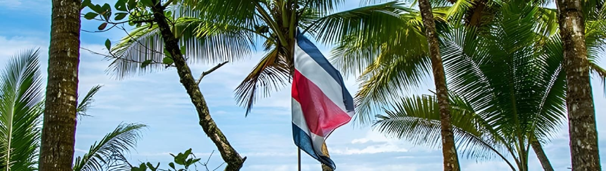
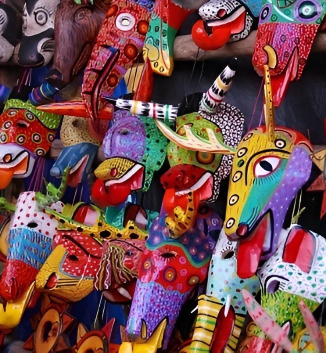
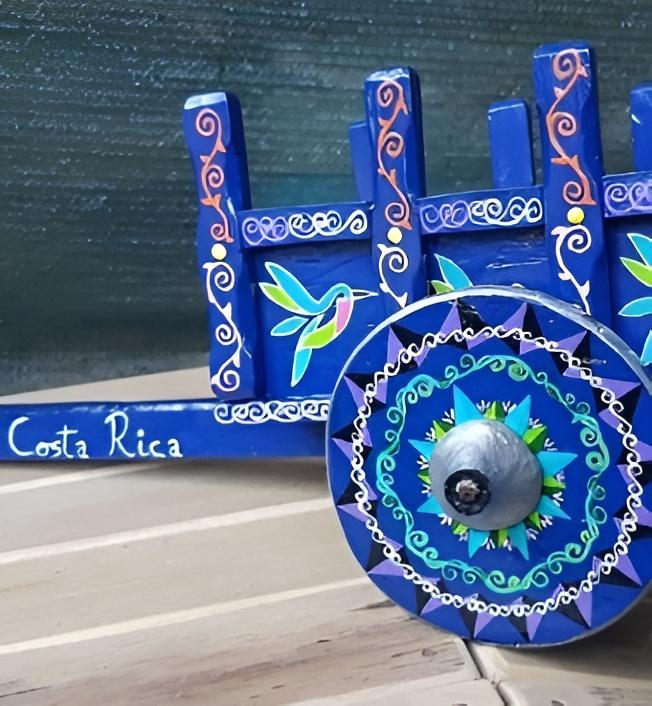
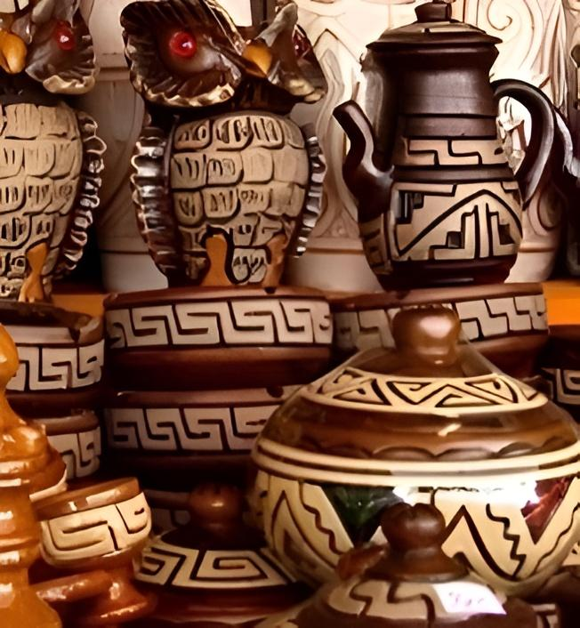

Costa Rica
Costa Rica es un país donde la naturaleza inspira el arte. Sus artesanías, creadas con materiales locales, son un reflejo de su biodiversidad. Sus piezas, elaboradas con materiales como la madera, el barro y las fibras naturales, son un reflejo de su biodiversidad y cultura. Desde las máscaras de las borucas hasta las carretas decoradas, cada artesanía cuenta una historia.
Artículos
Máscaras borucas
Su origen se remonta a rituales ancestrales, donde se utilizaban para representar a deidades y espíritus en ceremonias. Son talladas en madera, generalmente de cedro, y pintadas con colores vibrantes que representan la naturaleza y los elementos. Sus rostros son estilizados, con grandes ojos y bocas, y a menudo incluyen representaciones de animales.
Las máscaras Boruca son un símbolo de identidad cultural y un medio para transmitir conocimientos ancestrales de generación en generación. Su elaboración es un proceso ritualizado que conecta a los artesanos con sus raíces.
Nombre: Marco Antonio
Correo electrónico: marco.antonio.mas_borucas@gmail.com
Carretas decoradas
Originalmente utilizadas para transportar carga en las haciendas, las carretas fueron adornadas con motivos decorativos para participar en fiestas y desfiles. Las carretas están decoradas con pinturas vibrantes que representan escenas de la vida rural, animales y motivos florales.
La madera utilizada es generalmente de roble o cedro. Las carretas decoradas son un símbolo de la identidad costarricense y representan la tradición y la alegría de su gente.
Nombre: Natalia Sánchez
Correo electrónico: natalia.sanchez.arte_carretas@gmail.com
Cerámica Chorotega
La tradición cerámica Chorotega se remonta a cientos de años atrás, cuando las comunidades indígenas de la zona elaboraban piezas utilitarias y decorativas. La cerámica Chorotega se caracteriza por sus formas simples y elegantes, con diseños geométricos y motivos zoomorfos.
Se utiliza arcilla negra, a la que se le da un acabado brillante mediante el pulido. La cerámica Chorotega es un reflejo de la conexión de los pueblos indígenas con la tierra y sus creencias ancestrales.
Nombre: Óscar Ramírez
Correo electrónico: oscar.ramirez.costa_rica@gmail.com